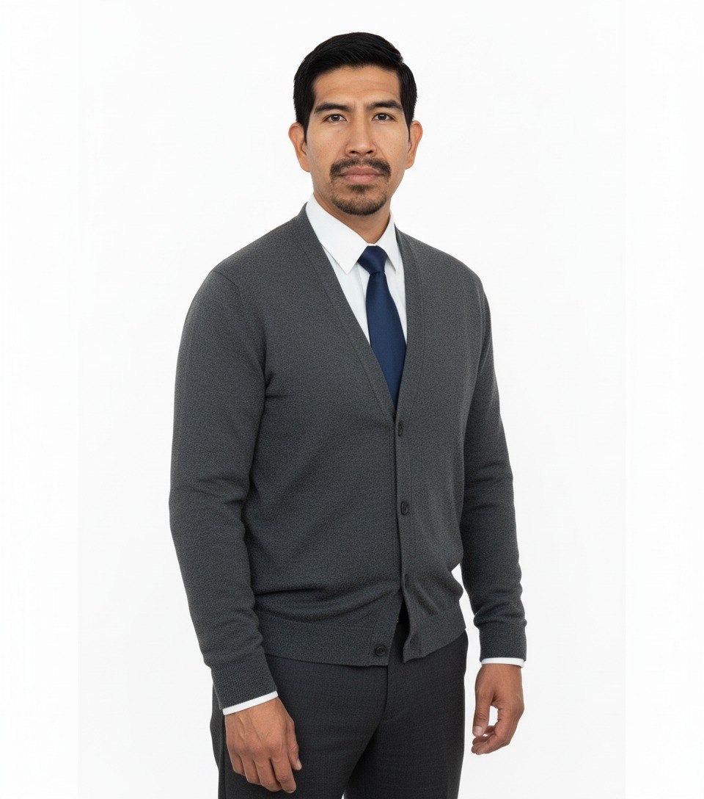

01
BOTDRIVE
Proyecto de automatización para organizar capturas e información operativa mediante un bot y generar reportes por sucursal.
Portafolio profesional
Desarrollador de Software Junior enfocado en crear experiencias digitales útiles y soluciones claras para convertir ideas en proyectos funcionales.

Conóceme
Soy egresado de Ingeniería de Desarrollo de Software, con título en trámite. Tengo experiencia en operaciones, control de información e inventarios, así como manejo de Excel y SAP. Busco seguir desarrollando mis habilidades técnicas y aportar soluciones prácticas mediante el software.
Lo que hago
Trabajo en progreso
Proyecto de automatización para organizar capturas e información operativa mediante un bot y generar reportes por sucursal.
Este sitio reúne mi perfil, habilidades y proyectos, y sirve como base para publicar nuevas soluciones digitales.
Estoy preparando nuevos proyectos. Esta sección se actualizará conforme publique avances y demostraciones.
Servicios de desarrollo web
Mi propuesta se centra en crear bases web claras y adaptables, con espacio para crecer junto con cada proyecto.
Sitios profesionales, responsivos y enfocados en presentar una idea, servicio o perfil.
Estructuras visuales ordenadas para que la información sea fácil de encontrar y entender.
Organización y evolución progresiva de proyectos web según sus necesidades reales.
Hablemos
Estoy abierto a oportunidades de aprendizaje, colaboración y desarrollo web.